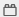
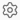
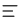
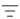
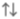
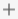
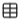

Как настроить ведение ежедневных заметок в Obsidian
Обзор
Эта инструкция поможет настроить систему ведения ежедневных заметок в Obsidian с помощью встроенных функций приложения. Такую систему можно использовать для планирования, управления задачами, отслеживания привычек, ведения дневника и записи идей.
Примечание
В Obsidian есть разные способы организации ежедневных заметок. Предложенный в этой инструкции вариант — один из самых оптимальных по соотношению пользы и сложности настройки.
Перед началом
Перед тем как приступить к настройке, вам понадобятся:
- установленный Obsidian версии 1.9.0 или новее;
- созданное хранилище;
- базовые навыки работы с заметками;
- включенные Ежедневные заметки и Базы данных в разделе Встроенные плагины

в настройках Obsidian (по умолчанию включены).
{kind=link}
Подробнее об установке Obsidian и работе с хранилищами и заметками см. Помощь по Obsidian.
Настройка шаблона ежедневной заметки
Чтобы не продумывать каждый раз содержание новой ежедневной заметки, используйте шаблон.
-
Создайте новую заметку и назовите ее «Шаблон ежедневной заметки».
-
Добавьте свойства в заметку.
Свойства — это дополнительные данные о заметке. В них можно указывать информацию, которую вы хотите отслеживать: привычки, настроение, идеи.
2.1. Откройте палитру команд с помощью клавиш Ctrl+P (или Cmd+P на macOS) и напишите в поле поиска «Свойство».
2.2. Выберите «Добавить свойство файла».
Под заголовком заметки появится панель со свойствами.
Если не получилось
Если под заголовком заметки не появилась панель со свойствами, зайдите в Настройки

→ Редактор, найдите настройку Свойства в документе и выберите значение Видимый.2.3. Впишите название свойства: например, «Тренировка». Нажмите Enter.
2.4. Нажмите на кнопку с тремя полосками

рядом с названием свойства.2.5. В раскрывшемся списке откройте Тип свойства. Выберите тип из предложенных вариантов: например, Флажок.
Совет
Используйте Флажок, чтобы отслеживать привычки, Текст, чтобы отслеживать идеи и мысли, и Список, чтобы отслеживать настроение.
2.6. Добавьте новые свойства с помощью кнопки Добавить свойство на панели.
-
Создайте в теле заметки текст шаблона, например:
Совет
Не создавайте сразу сложный шаблон. Для начала достаточно пары разделов. По мере ведения дневника вы можете редактировать шаблон по своему усмотрению.
{kind=link}
{kind=link}
{kind=link}
{kind=link}
{kind=link}
{kind=link}
{kind=link}
{kind=link}
Настройка ежедневных заметок
Чтобы заметки создавались по шаблону и сохранялись в нужном месте, настройте плагин Ежедневные заметки.
-
Создайте папку, в которой будете хранить ежедневные заметки.
-
Откройте Настройки и в списке Встроенные плагины выберите Ежедневные заметки .
Если не получилось
Если вы не видите пункта Ежедневные заметки, убедитесь, что в настройках включен этот плагин (см. Перед началом).
-
В поле Формат даты выберите формат или оставьте вариант по умолчанию.
Этот шаг задает формат названия ежедневной заметки. Например, заметка с форматом даты
ГГГГ-ММ-ДДбудет называться «2026-08-15». -
В поле Расположение нового файла выберите папку для хранения ежедневных заметок.
Дополнительно
Все ежедневные заметки будут автоматически сохраняться в этой папке. Чтобы сохранять ежедневные заметки в подпапках, например, по годам и месяцам, используйте поле Пользовательский формат.
Подробнее см. Помощь по Obsidian — Ежедневные заметки.
-
В поле Расположение шаблона выберите путь к вашему шаблону ежедневной заметки.
{kind=link}
Создание ежедневной заметки
-
Нажмите Сегодняшняя заметка на вертикальной панели Obsidian.
Откроется заметка с датой в названии и вашим шаблоном ежедневной заметки.
Если не получилось
Если вы не видите иконку на вертикальной панели, убедитесь, что в настройках включен плагин Ежедневные заметки (см. Перед началом).
-
Заполните свойства или запишите что-нибудь в свою сегодняшнюю заметку.
-
Добавьте теги. Для этого введите в любом месте заметки
#и ключевое слово: например#работа— если в вашей заметке есть записи по работе.С помощью тегов вы сможете фильтровать заметки по темам и проектам.
-
Свяжите ежедневную заметку с другими вашими заметками с помощью ссылок. Для этого введите
[[, выберите заметку из списка или введите название внутри квадратных скобок: например,[[Ремонт]]— если в вашей ежедневной заметке есть задачи по ремонту.Ссылки помогут вам увидеть, по каким заметкам у вас есть записи в ежедневных заметках: в Локальном графе или в Упоминаниях со ссылкой внизу заметок.
Создание базы ежедневных заметок
Чтобы удобно просматривать ежедневные заметки, фильтровать их и отслеживать привычки, создайте базу.
-
Нажмите Создать новую базу на вертикальной панели Obsidian.
Откроется база со всеми заметками вашего хранилища.
Если не получилось
Если вы не видите иконку на вертикальной панели, убедитесь, что в настройках включен плагин Базы данных (см. Перед началом).
-
Назовите базу — например, «Мои ежедневные заметки».
-
Добавьте фильтр для отображения только ежедневных заметок.
3.1. На панели в верхней части базы нажмите Фильтр

и выберите Все представления.3.2. В поле фильтра оставьте свойство File (Файл), поставьте условие in folder и выберите папку с ежедневными заметками.
Теперь в базе отображаются только ежедневные заметки.
-
Добавьте заданные в шаблоне свойства, которые вы хотите отслеживать и просматривать на общей странице базы ежедневных заметок.
4.1. На панели в верхней части базы нажмите Свойства .
4.2. Поставьте галочки напротив тех свойств, которые вы хотите видеть на странице базы — например,
Тренировка,Медитация,Событие дня.Выбранные свойства теперь будут отображаться в базе.
Дополнительно
Вы также можете выбрать для отображения системные свойства — например, теги или ссылки на файлы.
-
Добавьте сортировку по дате.
5.1. На панели в верхней части базы нажмите Сортировка

.5.2. Нажмите на Свойства под заголовком Сортировать по.
5.3. В списке свойств выберите Дата создания , а в поле рядом — вариант сортировки От нового к старому, чтобы последняя ежедневная заметка всегда была наверху.
-
Добавьте дополнительный фильтр, если хотите видеть ежедневные заметки только за определенный период.
6.1. Выберите Фильтр → Текущее представление.
6.2. В поле фильтра установите свойство Date (Дата), поставьте условие on or after и выберите дату, начиная с которой нужно отображать заметки: например, «01.08.2026».
6.3. Добавьте второе условие фильтра: нажмите Добавить фильтр

, выберите свойство Date (Дата), условие on or before и дату окончания периода. Например, «31.08.2026», чтобы вместе с условием из шага 6.2 фильтр показывал заметки только за август.
{kind=link}
{kind=link}
{kind=link}
{kind=link}
{kind=link}
{kind=link}
{kind=link}
{kind=link}
{kind=link}
{kind=link}
{kind=link}
Дополнительно
Вы можете создать дополнительные Представления 
{kind=link}
Теперь у вас есть рабочая система ежедневных заметок: шаблон, настроенный плагин и база для просмотра и отслеживания.